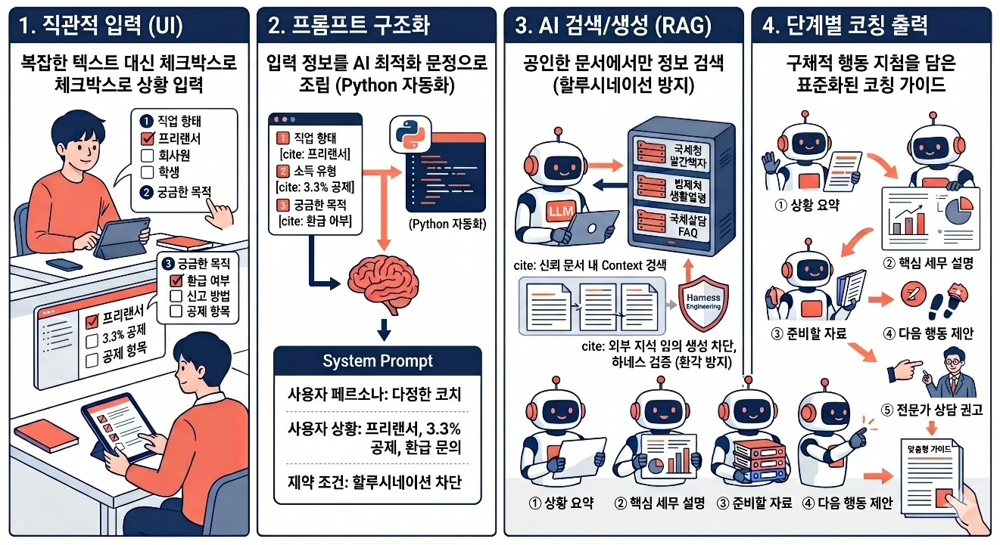
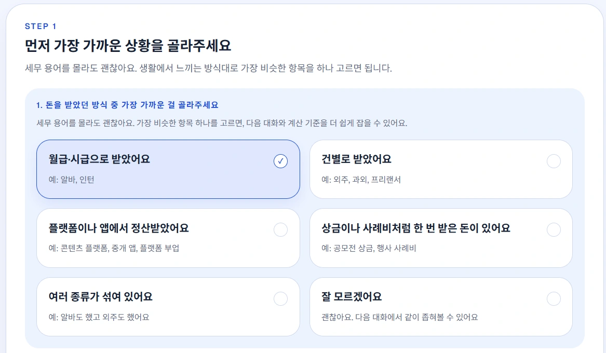

PROJECT 07 / 생활 정보 · 검색 기반 AIPROJECT 07 / Everyday Information · Retrieval-Based AI
세무사 방문 전 코치 AICoach AI Before Visiting a Tax Accountant
상황 정리와 공식 자료 검색을 분리한 두 에이전트 구조로, 세무 상담 전 준비를 돕습니다.A two-agent structure that separates situation summarization from official document retrieval, helping users prepare before a tax consultation.
01 문제 상황 Problem
아르바이트·직장·프리랜서 소득이 겹치는 청년은 세무 용어가 낯설어 무엇을 질문해야 하는지부터 막히기 쉽습니다. 자신의 상황을 먼저 정리하고, 필요한 서류와 다음 행동을 이해할 수 있는 코치형 서비스를 목표로 했습니다.Young people with overlapping part-time, salaried, and freelance income are often unfamiliar with tax terminology and get stuck before they even know what to ask. The project aimed for a coaching-style service that helps them first organize their situation and then understand the required documents and next steps.
02 사용 모델과 데이터 Models and Data
모델·기술Models · Techniques
- OpenAI API의 GPT 계열 모델: Planning 에이전트가 설명 순서와 검색 주제를 정하고, Response 에이전트가 답변을 작성합니다.GPT-family models via the OpenAI API: a Planning agent decides the order of explanation and search topics, and a Response agent writes the answer.
- 키워드 매칭 기반 RAG와 OCR·문서 파서: 공식 근거를 검색하고 증빙에서 필요한 정보를 추출합니다.Keyword-matching RAG with OCR and a document parser: retrieves official sources and extracts the required information from supporting documents.
데이터·입력Data · Inputs
- 국세청 안내 자료·상담 FAQ 등 공식 출처를 정리한 검색용 문서 모음.A searchable document collection compiled from official sources such as National Tax Service guides and consultation FAQs.
- 사용자가 선택한 직업·소득·질문 목적과 업로드한 증빙에서 추출한 구조화 정보.The user's selected occupation, income type, and purpose of inquiry, plus structured information extracted from uploaded supporting documents.
03 구현 과정 Implementation
- 체크박스와 문서 입력을 사용자 상황 정보로 구조화합니다.Checkbox selections and document inputs are structured into information about the user's situation.
- Planning 에이전트가 필요한 설명과 확인 사항을 정하고, 관련 공식 문서를 키워드로 검색합니다.A planning agent determines the explanations and checks needed, then searches relevant official documents by keyword.
- Response 에이전트가 근거를 반영해 상황 요약, 핵심 개념, 준비 자료, 다음 행동을 제시합니다.The Response agent incorporates the evidence to present a situation summary, key concepts, documents to prepare, and next actions.

04 핵심 결과 Key Results
- Next.js·FastAPI·Postgres를 이용해 상황 선택, 증빙 처리, 대화와 세션 저장을 연결했습니다.Used Next.js, FastAPI, and Postgres to connect situation selection, supporting-document processing, and conversation and session storage.
- 코치형 문체와 세무 개념 카드·타임라인으로 복잡한 정보를 단계적으로 안내하도록 구성했습니다.Designed to guide users through complex information step by step with a coaching tone, tax concept cards, and a timeline.

05 한계와 발전 방향 Limitations and Next Steps
- 현재 검색은 키워드 중심입니다. pgvector를 이용한 의미 기반 벡터 검색은 후속 개선 계획으로 구분했습니다.Search is currently keyword-based. Semantic vector search using pgvector was set aside as a planned follow-up improvement.
- 세무 판단 정확도에 대한 정량 평가가 없으며, 전문 상담 연계와 상용화 모델은 향후 목표입니다.There is no quantitative evaluation of tax-judgment accuracy; referral to professional consultation and a commercial model are future goals.
자료: 최종보고서 및 발표자료. 제출 자료를 바탕으로 정리했으며, 결과는 해당 프로젝트의 구현·실험 범위에 해당합니다.Source: final report and presentation slides. Summarized from the submitted materials; results reflect the scope of the project's implementation and experiments.